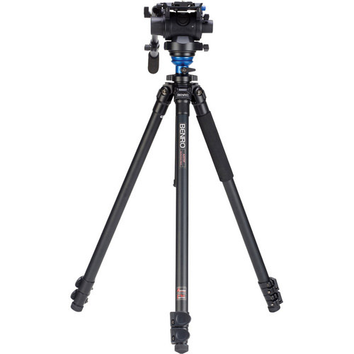
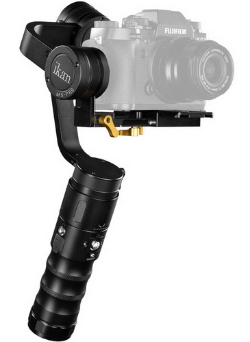

Random
Table of Contents
1 What's Not so Good with IBIS
| OIS | Optical Image Stabiization |
|---|---|
| IBIS | In Body Image Stabilization |
Types of stabilizers:

Figure 1: Tripod

Figure 2: Gimbal
Figure 3: Rig

Figure 4: Dolly
The Panasonic GH5s is a high-sensitivity camera, and such a camera is used more with a tripod rather than handheld. When used handheld under low light conditions, a gimbal will be used by many customers. So we think there is no problem if no body IS is provided.
… heat dissipation. IBIS increases noise because of the heat, for example, when we shoot astrophotography out on a cold night, that ISO performance improves, due to the cold temperatures.
Sensor-shift IS systems operate by "floating" the sensor using a series of electromagnets. Even when they're "off" they're not locked in place, they're simply set so that the electromagnets aren't attempting to correct for movement. This has the side-effect that, which mounted on a professional stabilization rig, there's a risk of the sensor being shaken around.
Why OIS is better than IBIS:
- With OIS, each lens is optimally tuned to achieve reliable correction.
- OIS allows faster and more accurate AF & exposure metering, because the image comes already stabilized to the camera sensor.
- OIS is more effective with long telephoto lenses.
- Depending on the lens used, IBIS can introduce more or less vignetting.
- Heat generated by IBIS introduces more grain to the images.
IBIS pros:
- Very useful for slower non-stabilized lenses.
- IBIS is paid just once, OIS is paid for each lens.
- Allows to use features like sensor shift to create high-resolution images (only if the subject is perfectly static).
- Can be used in combination with OIS.
If you really want the ultimate and very best image quality possible, then any form of in camera or lens stabilisation has to be avoided whenever possible.